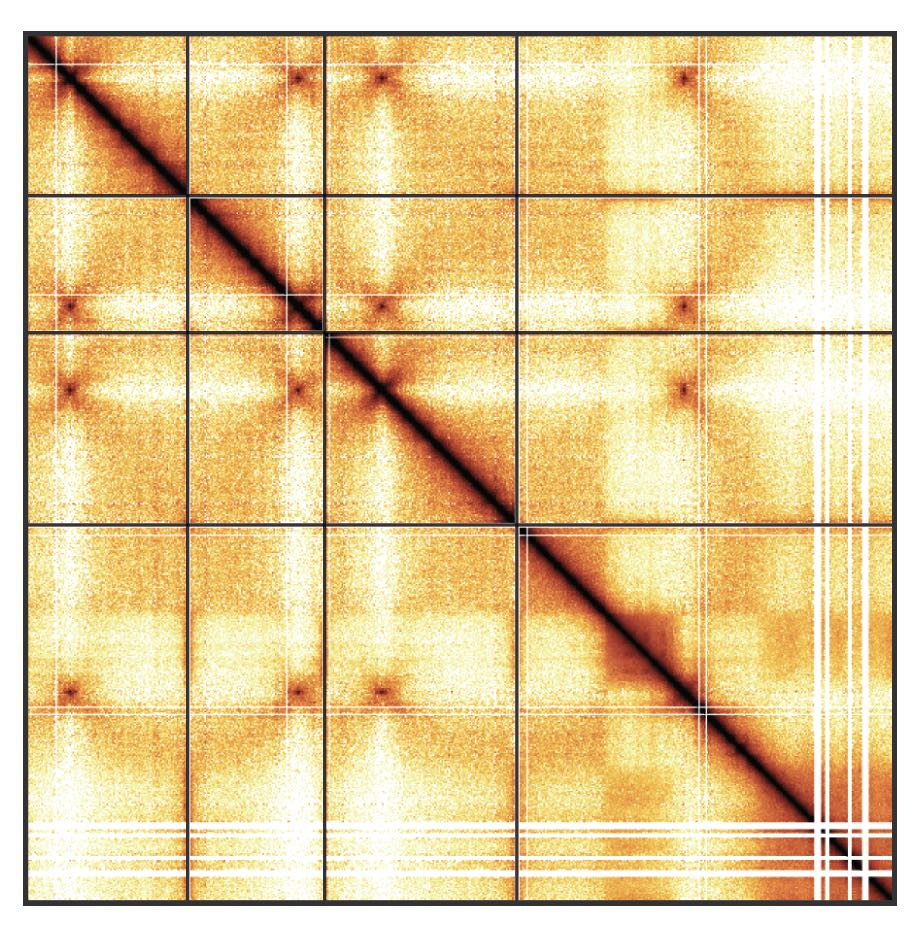

# This is adapted from Posit (https://docs.posit.co/resources/install-r/)
export R_VERSION=4.3.0
# Install curl and gdebi-core
sudo apt update -qq
sudo apt install curl gdebi-core -y
# Fetching the `.deb` install file from Posit repository
curl -O https://cdn.rstudio.com/r/ubuntu-2204/pkgs/r-${R_VERSION}_1_amd64.deb
# Install R
sudo gdebi r-${R_VERSION}_1_amd64.deb --non-interactive -q
# Optional: create a symlink to add R to your PATH
sudo ln -s /opt/R/${R_VERSION}/bin/R /usr/local/bin/ROrchestrating Hi-C analysis with Bioconductor

Package: OHCA
Authors: Jacques Serizay [aut, cre]
Compiled: 2023-11-24
Package version: 0.99.0
R version: R Under development (unstable) (2023-11-14 r85524)
BioC version: 3.19
License: MIT + file LICENSE
Welcome
This is the landing page of the “Orchestrating Hi-C analysis with Bioconductor” book. The primary aim of this book is to introduce the R user to Hi-C analysis. This book starts with key concepts important for the analysis of chromatin conformation capture and then presents Bioconductor tools that can be leveraged to process, analyze, explore and visualize Hi-C data.
Table of contents
This book is divided in three parts:
Part I: Introduction to Hi-C analysis
- Chapter 1: General principles and Hi-C data pre-processing
- Chapter 2: The different R classes implemented to analyze Hi-C
- Chapter 3: Manipulating Hi-C data in R
- Chapter 4: Hi-C data visualization
Part II: In-depth Hi-C analysis
- Chapter 5: Matrix-centric analysis
- Chapter 6: Interactions-centric analysis
- Chapter 7: Finding topological features from a Hi-C contact matrix
Part III: Hi-C analysis workflows
Installation & requirements
General audience
This books aims to demonstrate how to pre-process, parse and investigate Hi-C data in R. For this reason, a significant portion of this book consists of executable R code chunks. To be able to reproduce the examples demonstrated in this book and go further in the analysis of your real datasets, you will need to rely on several dependencies.
-
R >= 4.3is required. You can check R version by typingversionin an R console or in RStudio. If you do not haveR >= 4.3installed, you will need to update yourRversion, as most extra dependencies will requireR >= 4.3.
Installing R 4.3 👇
Detailed instructions are available here to install R 4.3 on a Linux machine (Ubuntu 22.04).
Briefly, to install pre-compiled version of R 4.3.0:
If you have some issues when installing the Hi-C packages listed below, you may need to install the following system libraries:
sudo apt update -qq
sudo apt install -y \
automake make cmake fort77 gfortran \
bzip2 unzip ftp build-essential \
libc6 libreadline-dev \
libpng-dev libjpeg-dev libtiff-dev \
libx11-dev libxt-dev x11-common \
libharfbuzz-dev libfribidi-dev \
libfreetype6-dev libfontconfig1-dev \
libbz2-dev liblzma-dev libtool \
libxml2 libxml2-dev \
libzstd-dev zlib1g-dev \
libdb-dev libglu1-mesa-dev \
libncurses5-dev libghc-zlib-dev libncurses-dev \
libpcre3-dev libxml2-dev libblas-dev libzmq3-dev \
libssl-dev libcurl4-openssl-dev \
libgsl-dev libeigen3-dev libboost-all-dev \
libgtk2.0-dev xvfb xauth xfonts-base apt-transport-https \
libhdf5-dev libudunits2-dev libgdal-dev libgeos-dev \
libproj-dev libnode-dev libmagick++-dev-
Bioconductor >= 3.18is also required. You can check whetherBioconductoris available and its version inRby typingBiocManager::version(). If you do not haveBiocManager>= 3.18 installed, you will need to update it as follows:
if (!require("BiocManager", quietly = TRUE))
install.packages("BiocManager")
BiocManager::install(version = "3.18")- You will also need important packages, which will be described in length in this book. The following
Rcode will set up most of the extra dependencies:
Developers
For developers or advanced R users, the devel versions of these packages can be installed along with their dependencies:
install.packages("pak", repos = "https://r-lib.github.io/p/pak/devel/")
pak::pkg_install("js2264/HiCExperiment", ask = FALSE, dependencies = c("Depends", "Imports", "Suggests"))
pak::pkg_install("js2264/HiCool", ask = FALSE, dependencies = c("Depends", "Imports", "Suggests"))
pak::pkg_install("js2264/HiContacts", ask = FALSE, dependencies = c("Depends", "Imports", "Suggests"))
pak::pkg_install("js2264/HiContactsData", ask = FALSE, dependencies = c("Depends", "Imports", "Suggests"))
pak::pkg_install("js2264/fourDNData", ask = FALSE, dependencies = c("Depends", "Imports", "Suggests"))
pak::pkg_install("js2264/DNAZooData", ask = FALSE, dependencies = c("Depends", "Imports", "Suggests"))Docker image
If you have docker installed, the easiest approach would be to run the following command in a shell terminal:
docker run -it ghcr.io/js2264/ohca:latest RThis will fetch a docker image with the latest development versions of the aforementioned packages pre-installed, and initiate an interactive R session.
Reproducibility
Building book
The OHCA book has been rendered in R thanks to a number of packages, including but not only:
BiocBookdevtoolsquartorebook
To build this book locally, you can run:
git clone git@github.com:js2264/OHCA.git && cd OHCA
quarto render
Warning
All dependencies listed above will be required!
The actual rendering of this book is done by GitHub Actions, and the rendered static website is hosted by GitHub Pages.
Session info
Click to expand 👇
sessioninfo::session_info(
installed.packages()[,"Package"],
include_base = TRUE
)
## ─ Session info ────────────────────────────────────────────────────────────
## setting value
## version R Under development (unstable) (2023-11-14 r85524)
## os Ubuntu 22.04.3 LTS
## system x86_64, linux-gnu
## ui X11
## language (EN)
## collate C
## ctype en_US.UTF-8
## tz Etc/UTC
## date 2023-11-24
## pandoc 3.1.1 @ /usr/local/bin/ (via rmarkdown)
##
## ─ Packages ────────────────────────────────────────────────────────────────
## package * version date (UTC) lib source
## abind 1.4-5 2016-07-21 [2] CRAN (R 4.4.0)
## aggregation 1.0.1 2018-01-25 [2] CRAN (R 4.4.0)
## AnnotationDbi 1.65.2 2023-11-03 [2] Bioconductor
## AnnotationFilter 1.27.0 2023-10-24 [2] Bioconductor
## AnnotationHub 3.11.0 2023-10-25 [2] Bioconductor
## askpass 1.2.0 2023-09-03 [2] CRAN (R 4.4.0)
## backports 1.4.1 2021-12-13 [2] CRAN (R 4.4.0)
## base * 4.4.0 2023-11-16 [3] local
## base64enc 0.1-3 2015-07-28 [2] CRAN (R 4.4.0)
## basilisk 1.15.1 2023-11-20 [2] Bioconductor 3.19 (R 4.4.0)
## basilisk.utils 1.15.1 2023-11-19 [2] Bioconductor 3.19 (R 4.4.0)
## beeswarm 0.4.0 2021-06-01 [2] CRAN (R 4.4.0)
## BH 1.81.0-1 2023-01-22 [2] CRAN (R 4.4.0)
## Biobase 2.63.0 2023-10-24 [2] Bioconductor
## BiocFileCache 2.11.1 2023-10-26 [2] Bioconductor
## BiocGenerics 0.49.1 2023-11-01 [2] Bioconductor
## BiocIO 1.13.0 2023-10-24 [2] Bioconductor
## BiocManager 1.30.22 2023-08-08 [2] CRAN (R 4.4.0)
## BiocParallel 1.37.0 2023-10-24 [2] Bioconductor
## BiocStyle 2.31.0 2023-10-24 [2] Bioconductor
## BiocVersion 3.19.1 2023-10-26 [2] Bioconductor
## biomaRt 2.59.0 2023-10-25 [2] Bioconductor
## Biostrings 2.71.1 2023-10-25 [2] Bioconductor
## biovizBase 1.51.0 2023-10-25 [2] Bioconductor
## bit 4.0.5 2022-11-15 [2] CRAN (R 4.4.0)
## bit64 4.0.5 2020-08-30 [2] CRAN (R 4.4.0)
## bitops 1.0-7 2021-04-24 [2] CRAN (R 4.4.0)
## blob 1.2.4 2023-03-17 [2] CRAN (R 4.4.0)
## bookdown 0.36 2023-10-16 [2] CRAN (R 4.4.0)
## boot 1.3-28.1 2022-11-22 [3] CRAN (R 4.4.0)
## brew 1.0-8 2022-09-29 [2] CRAN (R 4.4.0)
## brio 1.1.3 2021-11-30 [2] CRAN (R 4.4.0)
## broom 1.0.5 2023-06-09 [2] CRAN (R 4.4.0)
## broom.helpers 1.14.0 2023-08-07 [2] CRAN (R 4.4.0)
## BSgenome 1.71.1 2023-11-01 [2] Bioconductor
## BSgenome.Hsapiens.UCSC.hg38 1.4.5 2023-11-24 [2] Bioconductor
## bslib 0.6.0 2023-11-21 [2] CRAN (R 4.4.0)
## cachem 1.0.8 2023-05-01 [2] CRAN (R 4.4.0)
## Cairo 1.6-1 2023-08-18 [2] CRAN (R 4.4.0)
## calibrate 1.7.7 2020-06-19 [2] CRAN (R 4.4.0)
## callr 3.7.3 2022-11-02 [2] CRAN (R 4.4.0)
## checkmate 2.3.0 2023-10-25 [2] CRAN (R 4.4.0)
## class 7.3-22 2023-05-03 [3] CRAN (R 4.4.0)
## cli 3.6.1 2023-03-23 [2] CRAN (R 4.4.0)
## clipr 0.8.0 2022-02-22 [2] CRAN (R 4.4.0)
## cluster 2.1.4 2022-08-22 [3] CRAN (R 4.4.0)
## CodeDepends 0.6.5 2018-07-17 [2] CRAN (R 4.4.0)
## codetools 0.2-19 2023-02-01 [3] CRAN (R 4.4.0)
## colorspace 2.1-0 2023-01-23 [2] CRAN (R 4.4.0)
## commonmark 1.9.0 2023-03-17 [2] CRAN (R 4.4.0)
## compiler 4.4.0 2023-11-16 [3] local
## cowplot 1.1.1 2020-12-30 [2] CRAN (R 4.4.0)
## cpp11 0.4.6 2023-08-10 [2] CRAN (R 4.4.0)
## crayon 1.5.2 2022-09-29 [2] CRAN (R 4.4.0)
## credentials 2.0.1 2023-09-06 [2] CRAN (R 4.4.0)
## crosstalk 1.2.1 2023-11-23 [2] CRAN (R 4.4.0)
## csaw 1.37.0 2023-10-24 [2] Bioconductor
## curl 5.1.0 2023-10-02 [2] CRAN (R 4.4.0)
## data.table 1.14.8 2023-02-17 [2] CRAN (R 4.4.0)
## datasets * 4.4.0 2023-11-16 [3] local
## DBI 1.1.3 2022-06-18 [2] CRAN (R 4.4.0)
## dbplyr 2.4.0 2023-10-26 [2] CRAN (R 4.4.0)
## DelayedArray 0.29.0 2023-10-24 [2] Bioconductor
## deldir 2.0-2 2023-11-23 [2] CRAN (R 4.4.0)
## desc 1.4.2 2022-09-08 [2] CRAN (R 4.4.0)
## devtools 2.4.5 2022-10-11 [2] CRAN (R 4.4.0)
## dichromat 2.0-0.1 2022-05-02 [2] CRAN (R 4.4.0)
## diffHic 1.35.0 2023-10-24 [2] Bioconductor
## diffobj 0.3.5 2021-10-05 [2] CRAN (R 4.4.0)
## digest 0.6.33 2023-07-07 [2] CRAN (R 4.4.0)
## dir.expiry 1.11.0 2023-10-24 [2] Bioconductor
## DNAZooData 1.3.0 2023-10-31 [2] Bioconductor
## docopt 0.7.1 2020-06-24 [2] CRAN (R 4.4.0)
## doParallel 1.0.17 2022-02-07 [2] CRAN (R 4.4.0)
## downlit 0.4.3 2023-06-29 [2] CRAN (R 4.4.0)
## dplyr 1.1.4 2023-11-17 [2] CRAN (R 4.4.0)
## DT 0.30 2023-10-05 [2] CRAN (R 4.4.0)
## dynamicTreeCut 1.63-1 2016-03-11 [2] CRAN (R 4.4.0)
## edgeR 4.1.2 2023-11-19 [2] Bioconductor 3.19 (R 4.4.0)
## ellipsis 0.3.2 2021-04-29 [2] CRAN (R 4.4.0)
## ensembldb 2.27.1 2023-11-20 [2] Bioconductor 3.19 (R 4.4.0)
## evaluate 0.23 2023-11-01 [2] CRAN (R 4.4.0)
## ExperimentHub 2.11.0 2023-10-25 [2] Bioconductor
## fansi 1.0.5 2023-10-08 [2] CRAN (R 4.4.0)
## farver 2.1.1 2022-07-06 [2] CRAN (R 4.4.0)
## fastcluster 1.2.3 2021-05-24 [2] CRAN (R 4.4.0)
## fastmap 1.1.1 2023-02-24 [2] CRAN (R 4.4.0)
## filelock 1.0.2 2018-10-05 [2] CRAN (R 4.4.0)
## fontawesome 0.5.2 2023-08-19 [2] CRAN (R 4.4.0)
## forcats 1.0.0 2023-01-29 [2] CRAN (R 4.4.0)
## foreach 1.5.2 2022-02-02 [2] CRAN (R 4.4.0)
## foreign 0.8-85 2023-09-09 [3] CRAN (R 4.4.0)
## formatR 1.14 2023-01-17 [2] CRAN (R 4.4.0)
## Formula 1.2-5 2023-02-24 [2] CRAN (R 4.4.0)
## fourDNData 1.3.0 2023-10-31 [2] Bioconductor
## fs 1.6.3 2023-07-20 [2] CRAN (R 4.4.0)
## futile.logger 1.4.3 2016-07-10 [2] CRAN (R 4.4.0)
## futile.options 1.0.1 2018-04-20 [2] CRAN (R 4.4.0)
## generics 0.1.3 2022-07-05 [2] CRAN (R 4.4.0)
## GenomeInfoDb 1.39.1 2023-11-08 [2] Bioconductor
## GenomeInfoDbData 1.2.11 2023-11-24 [2] Bioconductor
## GenomicAlignments 1.39.0 2023-10-24 [2] Bioconductor
## GenomicFeatures 1.55.1 2023-10-29 [2] Bioconductor
## GenomicRanges 1.55.1 2023-10-29 [2] Bioconductor
## gert 2.0.0 2023-09-26 [2] CRAN (R 4.4.0)
## GGally 2.2.0 2023-11-22 [2] CRAN (R 4.4.0)
## ggbeeswarm 0.7.2 2023-04-29 [2] CRAN (R 4.4.0)
## ggbio 1.51.0 2023-10-25 [2] Bioconductor
## ggplot2 3.4.4 2023-10-12 [2] CRAN (R 4.4.0)
## ggrastr 1.0.2 2023-06-01 [2] CRAN (R 4.4.0)
## ggstats 0.5.1 2023-11-21 [2] CRAN (R 4.4.0)
## gh 1.4.0 2023-02-22 [2] CRAN (R 4.4.0)
## gitcreds 0.1.2 2022-09-08 [2] CRAN (R 4.4.0)
## glue 1.6.2 2022-02-24 [2] CRAN (R 4.4.0)
## GO.db 3.18.0 2023-11-24 [2] Bioconductor
## GOTHiC 1.39.0 2023-10-24 [2] Bioconductor
## graph 1.81.0 2023-10-24 [2] Bioconductor
## graphics * 4.4.0 2023-11-16 [3] local
## grDevices * 4.4.0 2023-11-16 [3] local
## grid 4.4.0 2023-11-16 [3] local
## gridExtra 2.3 2017-09-09 [2] CRAN (R 4.4.0)
## gtable 0.3.4 2023-08-21 [2] CRAN (R 4.4.0)
## gtools 3.9.5 2023-11-20 [2] CRAN (R 4.4.0)
## haven 2.5.3 2023-06-30 [2] CRAN (R 4.4.0)
## here 1.0.1 2020-12-13 [2] CRAN (R 4.4.0)
## HiCcompare 1.25.0 2023-10-24 [2] Bioconductor
## HiCExperiment 1.3.0 2023-10-24 [2] Bioconductor
## HiContacts 1.5.0 2023-10-24 [2] Bioconductor
## HiContactsData 1.5.2 2023-11-21 [2] Bioconductor 3.19 (R 4.4.0)
## HiCool 1.3.0 2023-10-24 [2] Bioconductor
## highr 0.10 2022-12-22 [2] CRAN (R 4.4.0)
## Hmisc 5.1-1 2023-09-12 [2] CRAN (R 4.4.0)
## hms 1.1.3 2023-03-21 [2] CRAN (R 4.4.0)
## htmlTable 2.4.2 2023-10-29 [2] CRAN (R 4.4.0)
## htmltools 0.5.7 2023-11-03 [2] CRAN (R 4.4.0)
## htmlwidgets 1.6.3 2023-11-22 [2] CRAN (R 4.4.0)
## httpuv 1.6.12 2023-10-23 [2] CRAN (R 4.4.0)
## httr 1.4.7 2023-08-15 [2] CRAN (R 4.4.0)
## httr2 1.0.0 2023-11-14 [2] CRAN (R 4.4.0)
## hwriter 1.3.2.1 2022-04-08 [2] CRAN (R 4.4.0)
## impute 1.77.0 2023-10-24 [2] Bioconductor
## ini 0.3.1 2018-05-20 [2] CRAN (R 4.4.0)
## InteractionSet 1.31.0 2023-10-24 [2] Bioconductor
## interactiveDisplayBase 1.41.0 2023-10-24 [2] Bioconductor
## interp 1.1-4 2023-03-31 [2] CRAN (R 4.4.0)
## IRanges 2.37.0 2023-10-24 [2] Bioconductor
## isoband 0.2.7 2022-12-20 [2] CRAN (R 4.4.0)
## iterators 1.0.14 2022-02-05 [2] CRAN (R 4.4.0)
## jpeg 0.1-10 2022-11-29 [2] CRAN (R 4.4.0)
## jquerylib 0.1.4 2021-04-26 [2] CRAN (R 4.4.0)
## jsonlite 1.8.7 2023-06-29 [2] CRAN (R 4.4.0)
## KEGGREST 1.43.0 2023-10-24 [2] Bioconductor
## KernSmooth 2.23-22 2023-07-10 [3] CRAN (R 4.4.0)
## knitr 1.45 2023-10-30 [2] CRAN (R 4.4.0)
## labeling 0.4.3 2023-08-29 [2] CRAN (R 4.4.0)
## labelled 2.12.0 2023-06-21 [2] CRAN (R 4.4.0)
## lambda.r 1.2.4 2019-09-18 [2] CRAN (R 4.4.0)
## later 1.3.1 2023-05-02 [2] CRAN (R 4.4.0)
## lattice 0.22-5 2023-10-24 [3] CRAN (R 4.4.0)
## latticeExtra 0.6-30 2022-07-04 [2] CRAN (R 4.4.0)
## lazyeval 0.2.2 2019-03-15 [2] CRAN (R 4.4.0)
## lifecycle 1.0.4 2023-11-07 [2] CRAN (R 4.4.0)
## limma 3.59.1 2023-10-30 [2] Bioconductor
## littler 0.3.18 2023-03-26 [2] CRAN (R 4.4.0)
## locfit 1.5-9.8 2023-06-11 [2] CRAN (R 4.4.0)
## magrittr 2.0.3 2022-03-30 [2] CRAN (R 4.4.0)
## MASS 7.3-60.1 2023-11-16 [3] local
## Matrix 1.6-3 2023-11-14 [3] CRAN (R 4.4.0)
## MatrixGenerics 1.15.0 2023-10-24 [2] Bioconductor
## matrixStats 1.1.0 2023-11-07 [2] CRAN (R 4.4.0)
## memoise 2.0.1 2021-11-26 [2] CRAN (R 4.4.0)
## metapod 1.11.0 2023-10-24 [2] Bioconductor
## methods * 4.4.0 2023-11-16 [3] local
## mgcv 1.9-0 2023-07-11 [3] CRAN (R 4.4.0)
## mime 0.12 2021-09-28 [2] CRAN (R 4.4.0)
## miniUI 0.1.1.1 2018-05-18 [2] CRAN (R 4.4.0)
## multiHiCcompare 1.21.0 2023-10-24 [2] Bioconductor
## munsell 0.5.0 2018-06-12 [2] CRAN (R 4.4.0)
## nlme 3.1-163 2023-08-09 [3] CRAN (R 4.4.0)
## nnet 7.3-19 2023-05-03 [3] CRAN (R 4.4.0)
## OHCA 0.99.0 2023-11-24 [1] Bioconductor
## openssl 2.1.1 2023-09-25 [2] CRAN (R 4.4.0)
## OrganismDbi 1.45.0 2023-10-25 [2] Bioconductor
## packrat 0.9.2 2023-09-05 [2] CRAN (R 4.4.0)
## parallel 4.4.0 2023-11-16 [3] local
## patchwork 1.1.3 2023-08-14 [2] CRAN (R 4.4.0)
## pbapply 1.7-2 2023-06-27 [2] CRAN (R 4.4.0)
## pheatmap 1.0.12 2019-01-04 [2] CRAN (R 4.4.0)
## pillar 1.9.0 2023-03-22 [2] CRAN (R 4.4.0)
## pkgbuild 1.4.2 2023-06-26 [2] CRAN (R 4.4.0)
## pkgconfig 2.0.3 2019-09-22 [2] CRAN (R 4.4.0)
## pkgdown 2.0.7 2022-12-14 [2] CRAN (R 4.4.0)
## pkgload 1.3.3 2023-09-22 [2] CRAN (R 4.4.0)
## plogr 0.2.0 2018-03-25 [2] CRAN (R 4.4.0)
## plotly 4.10.3 2023-10-21 [2] CRAN (R 4.4.0)
## plyinteractions 1.1.0 2023-10-24 [2] Bioconductor
## plyr 1.8.9 2023-10-02 [2] CRAN (R 4.4.0)
## plyranges 1.23.0 2023-10-24 [2] Bioconductor
## png 0.1-8 2022-11-29 [2] CRAN (R 4.4.0)
## praise 1.0.0 2015-08-11 [2] CRAN (R 4.4.0)
## preprocessCore 1.65.0 2023-10-24 [2] Bioconductor
## prettyunits 1.2.0 2023-09-24 [2] CRAN (R 4.4.0)
## processx 3.8.2 2023-06-30 [2] CRAN (R 4.4.0)
## profvis 0.3.8 2023-05-02 [2] CRAN (R 4.4.0)
## progress 1.2.2 2019-05-16 [2] CRAN (R 4.4.0)
## promises 1.2.1 2023-08-10 [2] CRAN (R 4.4.0)
## ProtGenerics 1.35.0 2023-10-24 [2] Bioconductor
## ps 1.7.5 2023-04-18 [2] CRAN (R 4.4.0)
## purrr 1.0.2 2023-08-10 [2] CRAN (R 4.4.0)
## qqman 0.1.9 2023-08-23 [2] CRAN (R 4.4.0)
## quarto 1.3 2023-09-19 [2] CRAN (R 4.4.0)
## R6 2.5.1 2021-08-19 [2] CRAN (R 4.4.0)
## ragg 1.2.6 2023-10-10 [2] CRAN (R 4.4.0)
## rappdirs 0.3.3 2021-01-31 [2] CRAN (R 4.4.0)
## RBGL 1.79.0 2023-10-24 [2] Bioconductor
## rcmdcheck 1.4.0 2021-09-27 [2] CRAN (R 4.4.0)
## RColorBrewer 1.1-3 2022-04-03 [2] CRAN (R 4.4.0)
## Rcpp 1.0.11 2023-07-06 [2] CRAN (R 4.4.0)
## RcppArmadillo 0.12.6.6.0 2023-11-01 [2] CRAN (R 4.4.0)
## RcppEigen 0.3.3.9.4 2023-11-02 [2] CRAN (R 4.4.0)
## RcppGSL 0.3.13 2023-01-13 [2] CRAN (R 4.4.0)
## RcppParallel 5.1.7 2023-02-27 [2] CRAN (R 4.4.0)
## RcppTOML 0.2.2 2023-01-29 [2] CRAN (R 4.4.0)
## RcppZiggurat 0.1.6 2020-10-20 [2] CRAN (R 4.4.0)
## RCurl 1.98-1.13 2023-11-02 [2] CRAN (R 4.4.0)
## readr 2.1.4 2023-02-10 [2] CRAN (R 4.4.0)
## rebook 1.13.0 2023-10-24 [2] Bioconductor
## rematch2 2.1.2 2020-05-01 [2] CRAN (R 4.4.0)
## remotes 2.4.2.1 2023-07-18 [2] CRAN (R 4.4.0)
## renv 1.0.3 2023-09-19 [2] CRAN (R 4.4.0)
## reshape2 1.4.4 2020-04-09 [2] CRAN (R 4.4.0)
## restfulr 0.0.15 2022-06-16 [2] CRAN (R 4.4.0)
## reticulate 1.34.0 2023-10-12 [2] CRAN (R 4.4.0)
## Rfast 2.1.0 2023-11-09 [2] CRAN (R 4.4.0)
## rhdf5 2.47.0 2023-10-24 [2] Bioconductor
## rhdf5filters 1.15.1 2023-11-06 [2] Bioconductor
## Rhdf5lib 1.25.0 2023-10-24 [2] Bioconductor
## Rhtslib 2.99.1 2023-11-02 [2] Bioconductor
## rjson 0.2.21 2022-01-09 [2] CRAN (R 4.4.0)
## rlang 1.1.2 2023-11-04 [2] CRAN (R 4.4.0)
## rmarkdown 2.25 2023-09-18 [2] CRAN (R 4.4.0)
## rmdformats 1.0.4 2022-05-17 [2] CRAN (R 4.4.0)
## roxygen2 7.2.3 2022-12-08 [2] CRAN (R 4.4.0)
## rpart 4.1.21 2023-10-09 [3] CRAN (R 4.4.0)
## rprojroot 2.0.4 2023-11-05 [2] CRAN (R 4.4.0)
## Rsamtools 2.19.2 2023-11-05 [2] Bioconductor
## rsconnect 1.1.1 2023-10-04 [2] CRAN (R 4.4.0)
## RSpectra 0.16-1 2022-04-24 [2] CRAN (R 4.4.0)
## RSQLite 2.3.3 2023-11-04 [2] CRAN (R 4.4.0)
## rstudioapi 0.15.0 2023-07-07 [2] CRAN (R 4.4.0)
## rtracklayer 1.63.0 2023-10-24 [2] Bioconductor
## rversions 2.1.2 2022-08-31 [2] CRAN (R 4.4.0)
## S4Arrays 1.3.0 2023-10-24 [2] Bioconductor
## S4Vectors 0.41.1 2023-10-26 [2] Bioconductor
## sass 0.4.7 2023-07-15 [2] CRAN (R 4.4.0)
## scales 1.2.1 2022-08-20 [2] CRAN (R 4.4.0)
## sessioninfo 1.2.2 2021-12-06 [2] CRAN (R 4.4.0)
## shiny 1.8.0 2023-11-17 [2] CRAN (R 4.4.0)
## ShortRead 1.61.0 2023-10-24 [2] Bioconductor
## snow 0.4-4 2021-10-27 [2] CRAN (R 4.4.0)
## sourcetools 0.1.7-1 2023-02-01 [2] CRAN (R 4.4.0)
## SparseArray 1.3.1 2023-11-07 [2] Bioconductor
## spatial 7.3-17 2023-07-20 [3] CRAN (R 4.4.0)
## splines 4.4.0 2023-11-16 [3] local
## statmod 1.5.0 2023-01-06 [2] CRAN (R 4.4.0)
## stats * 4.4.0 2023-11-16 [3] local
## stats4 4.4.0 2023-11-16 [3] local
## strawr 0.0.91 2023-03-29 [2] CRAN (R 4.4.0)
## stringi 1.8.2 2023-11-23 [2] CRAN (R 4.4.0)
## stringr 1.5.1 2023-11-14 [2] CRAN (R 4.4.0)
## SummarizedExperiment 1.33.0 2023-10-24 [2] Bioconductor
## survival 3.5-7 2023-08-14 [3] CRAN (R 4.4.0)
## sys 3.4.2 2023-05-23 [2] CRAN (R 4.4.0)
## systemfonts 1.0.5 2023-10-09 [2] CRAN (R 4.4.0)
## tcltk 4.4.0 2023-11-16 [3] local
## terra 1.7-55 2023-10-13 [2] CRAN (R 4.4.0)
## testthat 3.2.0 2023-10-06 [2] CRAN (R 4.4.0)
## textshaping 0.3.7 2023-10-09 [2] CRAN (R 4.4.0)
## tibble 3.2.1 2023-03-20 [2] CRAN (R 4.4.0)
## tidyr 1.3.0 2023-01-24 [2] CRAN (R 4.4.0)
## tidyselect 1.2.0 2022-10-10 [2] CRAN (R 4.4.0)
## tinytex 0.49 2023-11-22 [2] CRAN (R 4.4.0)
## tools 4.4.0 2023-11-16 [3] local
## TopDom 0.10.1 2021-05-06 [2] CRAN (R 4.4.0)
## tzdb 0.4.0 2023-05-12 [2] CRAN (R 4.4.0)
## urlchecker 1.0.1 2021-11-30 [2] CRAN (R 4.4.0)
## usethis 2.2.2 2023-07-06 [2] CRAN (R 4.4.0)
## utf8 1.2.4 2023-10-22 [2] CRAN (R 4.4.0)
## utils * 4.4.0 2023-11-16 [3] local
## VariantAnnotation 1.49.2 2023-11-15 [2] Bioconductor
## vctrs 0.6.4 2023-10-12 [2] CRAN (R 4.4.0)
## vipor 0.4.5 2017-03-22 [2] CRAN (R 4.4.0)
## viridis 0.6.4 2023-07-22 [2] CRAN (R 4.4.0)
## viridisLite 0.4.2 2023-05-02 [2] CRAN (R 4.4.0)
## vroom 1.6.4 2023-10-02 [2] CRAN (R 4.4.0)
## waldo 0.5.2 2023-11-02 [2] CRAN (R 4.4.0)
## WGCNA 1.72-1 2023-01-18 [2] CRAN (R 4.4.0)
## whisker 0.4.1 2022-12-05 [2] CRAN (R 4.4.0)
## withr 2.5.2 2023-10-30 [2] CRAN (R 4.4.0)
## xfun 0.41 2023-11-01 [2] CRAN (R 4.4.0)
## XML 3.99-0.15 2023-11-02 [2] CRAN (R 4.4.0)
## xml2 1.3.5 2023-07-06 [2] CRAN (R 4.4.0)
## xopen 1.0.0 2018-09-17 [2] CRAN (R 4.4.0)
## xtable 1.8-4 2019-04-21 [2] CRAN (R 4.4.0)
## XVector 0.43.0 2023-10-24 [2] Bioconductor
## yaml 2.3.7 2023-01-23 [2] CRAN (R 4.4.0)
## zip 2.3.0 2023-04-17 [2] CRAN (R 4.4.0)
## zlibbioc 1.49.0 2023-10-24 [2] Bioconductor
##
## [1] /tmp/RtmpNsjxQV/Rinst5671bcd921
## [2] /usr/local/lib/R/site-library
## [3] /usr/local/lib/R/library
##
## ─ Python configuration ────────────────────────────────────────────────────
## Python is not available
##
## ───────────────────────────────────────────────────────────────────────────